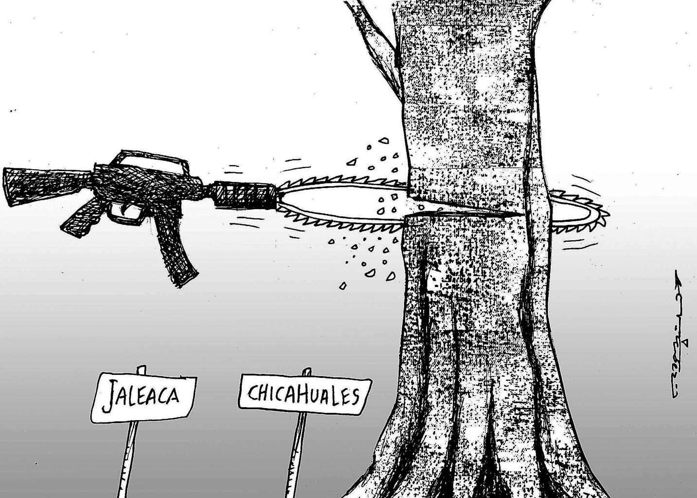

MEDIDAS DE PREVENCION Y CONTROL
Para combatir la tala inmoderada, se han implementado diversas estrategias:
- • Legislación ambiental: Leyes que regulan la explotación forestal.
- • Certificación forestal: Programas que promueven prácticas sostenibles.
- • Monitoreo satelital: Tecnología para detectar y prevenir actividades ilegales.
- • Educación ambiental: Campañas de concienciación sobre la importancia de los bosques.
